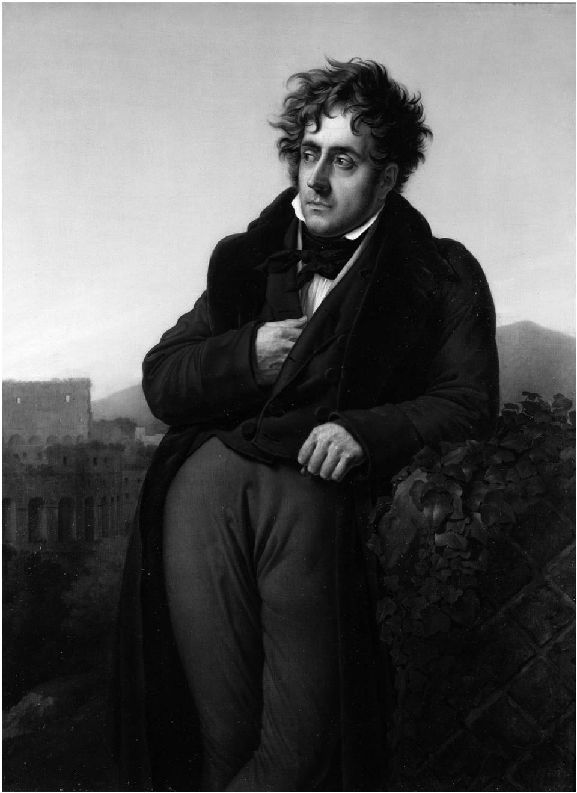
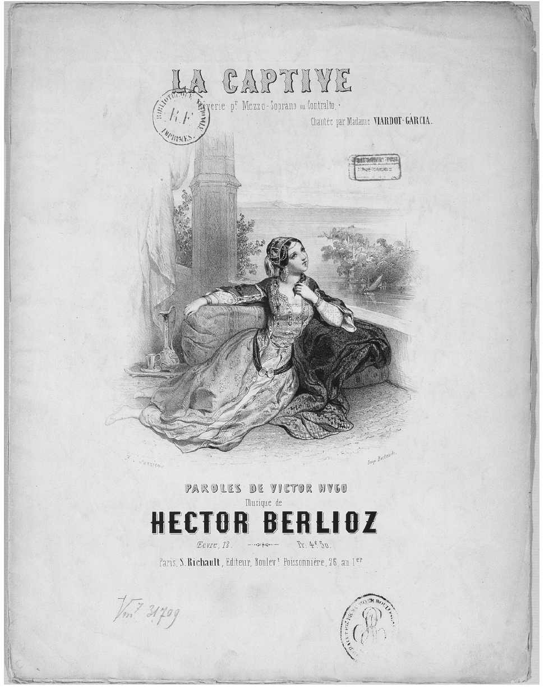
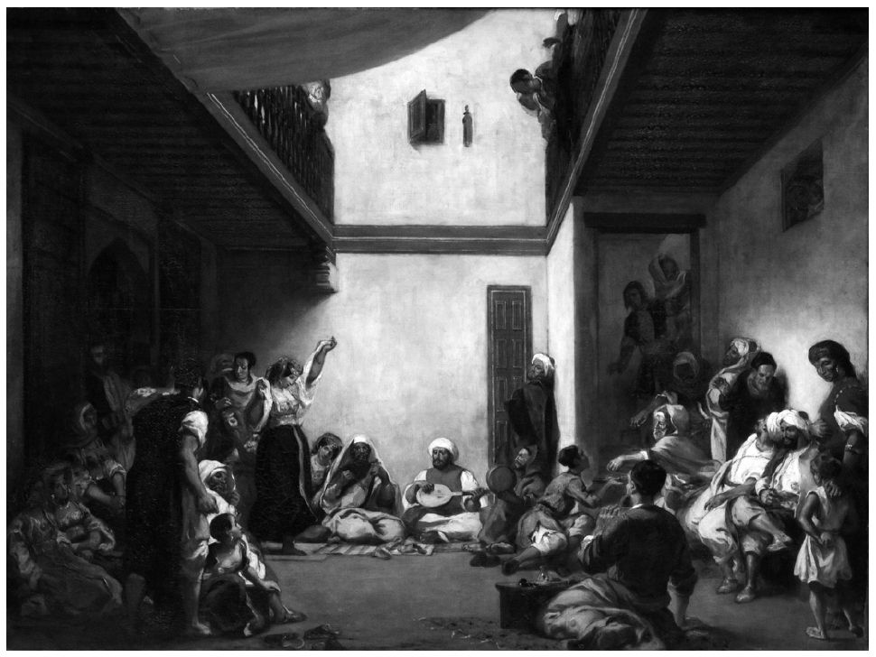

如果根据浪漫主义者所持政治立场将他们从“左”往“右”放在一条线上依次排列，他们会排成长长的一条，多数人会排在左边。随着年龄的增长，一些浪漫主义者会沿着这条线向左或向右发生较大的位移，例如，华兹华斯变得更加保守而雨果则更倾向自由。还有一些浪漫主义者的观点复杂难懂，难以归类，只能将他们放在线上或线下。这种左右一条线排列的模式无疑过于单一。一些人认为浪漫主义者只关注自身、自然或爱，但至少有一个事实会令他们感到诧异：大多数浪漫主义者都热情投身于政治事业。斯塔尔夫人信奉法国大革命开创性的自由精神，却被拿破仑逐出了巴黎。她在自己离日内瓦不远的科佩城堡建立了沙龙暨流亡政府。拜伦曾短期担任过英国上议院议员，在此期间于1812年发表了一篇激进演讲，公开支持诺丁汉砸毁机器的“勒德分子”。之后，他前往希腊援助革命者，最终病逝于希腊，成为英雄。1825年，普希金的几位朋友参加了圣彼得堡的“十二月党人”起义，普希金可能也被卷入其中；这之后，沙皇亲自审查他的作品。1848年，法兰西第二共和国临时政府成立，拉马丁担任首脑。1876年，雨果当选巴黎参议员。相比之下，其他一些浪漫主义者的政治事业并没有那么崇高。在法国大革命93早期，华兹华斯曾两次，也可能三次，访问法国，而且正如他本人后来所说的，他“对大革命颇为热衷”。华兹华斯与柯勒律治结识了约翰·塞沃尔，后者是工人阶级“伦敦通信协会”负责人之一，此前刚被富有同情心的陪审团免除叛国罪名。1797年，在塞沃尔拜访他们期间，三人均处于内政部的监控之下。立陶宛籍波兰诗人密茨凯维奇因参加政治活动于1823年被捕，被流放至俄国中部；随后又流亡巴黎，1855年前往伊斯坦布尔，组织军队在克里米亚与俄国开战，但最终身染霍乱而亡。希腊裔威尼斯诗人乌戈·福斯科洛大半生因参加政治活动而四处流亡；他曾经服役于拿破仑的军队，也曾经为意大利的统一与独立而摇旗呐喊。除此之外，还有很多例子。我们可以说，不仅福斯科洛是位战士，许多其他浪漫主义者也是战士：数位俄国人、夏多布里昂、维尼、裴多菲、拜伦与密茨凯维奇，其中拜伦与密茨凯维奇至少就动机而言算得上是战士。
法国大革命
美国殖民地成功争取独立的斗争经常萦绕在第一代浪漫主义者的脑海中。实际上，柯勒律治与骚塞曾经计划移民美国东部萨斯奎哈纳河畔，建立乌托邦农场；欧洲大陆也盛行类似的想法。但是，美利坚合众国的成立已成往昔。1789年能激发年轻人想象力的无疑是法国大革命，在某种程度上，法国大革命是在美国各种事件的鼓舞下发生的，却带来更为深远的巨变。
法国大革命永久地改变了公众观念、政治架构、政党认同以及欧洲和其他地区的理想与梦魇。这次革命甚至还为我们创造了“左翼”与“右翼”两个术语。法国是西欧人口最多、实力最强的国家，文化威望也无可匹敌，其语言被远在东方的俄国统治精英所采用并为大多数受过教育的欧洲人所知晓。法国发生的一切的影响几乎无处不在。它如急风暴雨般展开，历经多个过程：1789年，第三等级举行大型非暴力静坐示威，之后召开国民议会，最终建立君主立宪制；攻占巴黎巴士底狱；发表《人权和公民权宣言》；1791年，国王路易十六出逃、被捕，引发普鲁士与奥地利的威胁；次年，普鲁士与奥地利出兵法国；之后，九月大屠杀、国民公会、第一共和国成立等事件接踵而至；1793年，处死路易十六；英法爆发战争；罗伯斯庇尔携断头台实施恐怖统治；农村武装叛乱；1794年，恐怖统治遭到反抗，罗伯斯庇尔倒台；1796年，拿破仑任将军，1799年升至第一执政官，1804年成为皇帝，获得一系列惊人战绩，1812年在俄国遭遇惨败，1815年滑铁卢战役结束其军旅生涯。紧接着波旁王朝与旧政权复辟，维也纳会议召开。历史上从未有过这样一连串的政治动荡，激起了参与者和远处的旁观者激昂而放肆的言辞和行为。大革命有时看似一项崇高的事业，既美丽动人又让人感到恐惧，就如同一股过于强大而令人无法理解的自然之力。
大革命初始阶段，那些1789年时还是青少年或青壮年的浪漫主义诗人和艺术家们多半持欢迎态度。华兹华斯对此有过著名的描述：“能活在那个黎明真是幸福，/若那时你还年轻就更胜似天堂！”早期的德国浪漫主义者宣称自己为共和主义者。1794年，法国入侵德国西部莱茵兰时，他们仍恪守着自己的信念。但随着大革命遭受这样或那样的挫败，许多浪漫主义者对此心生绝望：他们或许可以忍受杀戮国王，甚至忍受很短暂的恐怖统治，但是1798年法国入侵瑞士（一个共和国！）、1804年罗马教皇为拿破仑加冕，都让大多数浪漫主义者忍无可忍。
柯勒律治在《法兰西颂》（1798）（诗名最初为《放弃主张》）一诗中描述了自己早期对大革命的忠诚热爱和自己为反法同盟——其中包括他挚爱的祖国——歌唱“亡歌”时的无所畏惧。但是，现在每当他听见“从赫尔维希亚［瑞士］冰寒的荒崖雪窟，/传来声声悲啼”时，他都会恳求“自由之神”的宽恕。数次紧要关头，华兹华斯对法国都充满着希望，直至1802年短暂的休战结束后。他将罗马教皇为拿破仑加冕之行径称作已被推翻的君主政体的卑鄙报复，“犬类竟又吞食呕吐的东西”（1805，《序曲》，10.934—935）。到了18世纪90年代末期，第一代德国浪漫主义者开始反对大革命，但是他们从中吸取教训：经过数世纪的迷信与压迫后，普通大众显然不适应共和政体，他们需要接受智慧型领导者的教育，这些领导者不是哲学家或哲人王，而应该是诗人与艺术家，因为后者富有想象力，能将美好社会的理想编织得令人向往。相比之下，华兹华斯与柯勒律治似乎放弃了政治、转而投身于自然，关照丰富的内心世界。柯勒律治在放弃主张的最后宣称，自由从来就不存在于“任何形式的人类力量之中”，它只存在于森林里、海洋中。华兹华斯则在《序曲》结尾处许下诺言：他和柯勒律治，“自然的代言人”，会教人们懂得人类的心灵如何“超拔于世事的体系”以及“无论人们出于希望或忧虑而进行了多少次革命，/人类的心灵仍未改变”（13.442及以后各页）。然而，他们两人尽管变得日益保守，仍然进行了数十年的社会与政治论战。
另一派德国浪漫主义者生活在海德堡，他们同耶拿–柏林派的弗里德里希·施莱格尔一样，变得更加反动，民族主义情绪更强。例如，约翰·约瑟夫·冯·格雷斯为多份直言不讳的杂志撰写评论、担任编辑。起初他投身于大革命浪潮之中，后来则转而反对拿破仑并撰写檄文，产生了较大的影响。他宣扬德国民族主义，谴责恢复欧洲旧有秩序的维也纳会议；最终，他认为，只有复兴天主教会才有助于解决问题。
1810年前后，第二代英国浪漫主义者日益成熟。他们没有因革命失败或背叛而变得斗志低落，仍然一如既往地致力于自由事业，乃至革命事业。在《恰尔德·哈罗德游记》第三章（1816）中，拜伦旧话重提：法国推翻了暴政，却“迎来新的地牢与王位”。但随后又坦率地承认：现在已是无路可退。“人类感觉到自身的力量，并表现了它。”尽管旧政权卷土重来，“时机来过、在来、会来，/不须悲观消极，/一朝生杀大权操诸我手，就不随便宽恕仇敌”（780—796）。雪莱呕心沥血写出两部重要作品来反思法国大革命，一部是用斯宾塞体写就的叙事诗《伊斯兰的起义》（1817），轻描淡写的伊斯兰背景难掩其浪漫主义气息；另一部是以永恒的远古时代为背景的“诗剧”《解放了的普罗米修斯》（1820）。和拜伦一样，雪莱认为没有宽恕与和解，社会就不可能转型，因此他笔下的新革命者不使用暴力手段——通过分解强权而非夺取权力取得胜利，获胜后也不采取报复行动。1819年，英国曼彻斯特郊外发生彼得卢大屠杀，骑兵们肆意砍杀和践踏大批手无寸铁的工人，血流成河。对此，他满怀悲愤，写下了《无政府主义的假面》（1819）。诗中，他更加简洁而深刻地表现了“非暴力”这一思想。他有感而发，想象着此次工人不再逃跑，而是“叉手而立”面对骑士手中的利剑。一个世纪之后，莫罕达斯·甘地会在印度向其追随者高声朗读这首诗。
法国本土的浪漫主义者又是怎样的一番景象呢？最近，有人认为大革命置换了法国浪漫主义，甚至已取而代之，直到1820年拉马丁的诗歌激发了它。对这一观点很难作出评价。不可否认，大革命严重损耗了原本可以投身艺术的巨大力量，也葬送了许多鲜活的生命，如“前浪漫主义”诗人安德烈·谢尼埃在1794年的恐怖统治时期（在其结束的两天前）被送上断头台；1819年，他的诗集发表，激励了初期浪漫主义运动的发展。然而，当时夏多布里昂与斯塔尔夫人均流放在外，尽管流放地域并不相同，但他们仍然坚持写作。夏多布里昂一开始对大革命持同情态度，但革命中的暴力让其厌恶之情油然而生，最终在德国加入了流亡者组成的军队。1800年大赦后，他在拿破仑政府中担任公职，但是几年后与拿破仑的关系破裂。1815年，他加入波旁王朝，不久，其保皇的热情变得比国王的还要高。斯塔尔夫人仍然秉持自由主义的立场，她与拿破仑政见不一，但也不支持波旁王朝。第二代浪漫主义者，比如维克多·雨果身边的群体，起初均为保皇派，但随着时间的流逝，大多数人的观点变得更倾向自由。1815年后，法国本土政治风波不断：1830、1848、1851、1870年各发生一次政权更替。实际上，整个欧洲当时也是暴动频发，尤其是1848年，只有相距甚远的英、俄两国形势相对稳定。不考虑其他因素，至少在19世纪中叶前，希望的曙光一直忽隐忽现，反复多次，弄得所有旁观者紧张不安。对于政府与社会间种种关系的传统猜测，如今都摆到了台面上。
工业革命与社会关系
18世纪第二次伟大的革命是工业革命，于1775年左右兴起于英国。此时，蒸汽发动机问世并有效地运用于焦炭熔铸行业，同时，纺纱织布机技术创新不断，大型“工厂”在英国北部新兴城市与苏格兰的格拉斯哥遍地开花。许多历史学家认为，1800年前后，英国已在工业生产和消费的所有领域“起飞”，完善的财政手段、丰富的农产品供应、充足的劳动力、精湛的专业技能、便捷的交通（最初为运河交通）和广阔的海外市场更使发展势头锐不可当。英国一直引领19世纪的发展，虽然比利时、法国、德国和北美与其差距并不太大。当然，这并不像法国大革命那样突然，其影响也是逐渐显现的。因此，早期的浪漫主义作品中并没有过多涉及。布莱克创造的短语“黑暗的撒旦磨坊”（1804）现在广为人知，当时可能不是用来指称生产物品的工厂，而是指摧毁灵魂的知识工厂，如约翰·洛克的哲学思想。我们发现前两代浪漫主义者最显著的特点是对资本主义行为与商业主义总体上的蔑视，对其指导学说功利主义的鄙夷和对城市化的反感。大约到19世纪40年代，才开始出现对新兴工厂的恐惧，但直到1854年才首次出现彻底控诉工业主义及其意识形态的浪漫主义文学作品——狄更斯的小说《艰难时世》。
在上一章我们讨论的十四行诗中，华兹华斯担心充满“豪夺淫逸”的“这个尘世”正在破坏我们与自然的关系。1800年，伦敦成为拥有百万人口的大都市，商业气氛浓厚，承继悠久“乡村”传统的华兹华斯（“乡村”是相对于伦敦而言的）对此深感厌恶。我们可以在詹姆斯·汤姆森的《夏季》（1727）和威廉·柯珀的《任务》（1785）中发现该“乡村”传统。前者指出，燃烧于充满哲思与“激情”的胸腔内的美德是“兴趣之子眼中的浪漫”（1388—1391）；后者声称“进步，时代的宠儿，/却踩在累累白骨之上”（3.764—765）。“兴趣”与“进步”成为新时代的两个口号，这引起了浪漫主义者与其他群体合理的疑惑，对他们而言，“浪漫”并不是贬义词。
当时更加鲜明的时代特征是讲求“实用”与“用途”。运用实用标准，功利主义之父杰里米·边沁发现，就提升快乐能力而言，诗歌并不比当时流行的图钉游戏更强。于是，各种讲习所如雨后春笋般涌现，推销“实用知识”。“进步”意味着必须生产有用的产品，使生活和工作更加快捷、方便、高效。但是进步的最终目的何在？为了快乐？这一回答未免过于简略且含糊，为人们所轻视。难道生活本身没有用处，没有远比豪夺淫逸与图钉游戏更有意义的目的吗？莱奥帕尔迪尖刻地拒斥“这个愚昧的时代，它将实用作为最高的追求，无法看到生活却因此而变得越来越无用”（《主导思想》，62—64）。弗里德里希·施莱格尔在小说《卢琴德》（1799）中写道：“勤勉与实用［der Fleißund der Nutzen］就如手执无情宝剑的死亡天使，横立在通往天堂的路上。”（选自“懒散”一章）一些事物的无用性成为浪漫主义的美德——斯塔尔夫人感叹道：“哦，我是如此痴迷于无用之事物”（10.5）——美就是其中最主要的。“自然喜欢外在美，而人喜欢它，”利·亨特在《利剑队长与笔墨队长》（1835）的后记中写道，“它酥软心灵、丰富想象，让我们认识到除了纯粹的实用外，世上还有其他美好的事物。”巴拉滕斯基在《最后的诗人》（1835）中谴责“沿着钢铁之路向前迈进”的时代，人们利欲熏心、急功近利，只有当伟大的诗人出现时，才能笑逐颜开。波德莱尔在《我喜欢这个想法》（1857）一诗中哀叹如今的诗人渴望重新创造希腊人质朴的感官美，却被执拗的实用之神所挫败。然而，有时浪漫主义者也会尝试不同策略，重新调整“用途”以获得更大的视野。华兹华斯为那位坎伯兰的老乞丐（在其同名诗歌中）辩护，以免他被那些为他着想的人们送进救济院。他强调道：“别认为这位老乞丐没有用处”，他让人们因慈善和友好而联系在一起，这也是在为社会服务。雪莱在《诗辩》中更加直言不讳：“实用的要义在于生产并确保快乐，而生产并维护这种快乐的人是诗人或者具有诗意情怀的哲学家。”
利己主义、实用主义与物质主义迫使浪漫主义的一些中心人物隐居在僻远之地或者过着放荡不羁的生活。他们嘲讽日益强大的资产阶级，渐渐丧失信心。但是，正如我们所见，当义愤难以控制，团结意识觉醒，而机会来临之时，许多浪漫主义者已经做好准备走上公众舞台，甚至走向街垒、奔赴战场。同时，他们受到激励，向社区和社会传递大量思想。随着大批人群涌入伦敦和巴黎，旧的社会关系逐渐消融。利己主义已很难将我们凝聚在一起，用托马斯·卡莱尔的话来说，“金钱关系”也不行。那么，能将大家凝聚在一起的是什么？为此，浪漫主义者四处探寻未被资本主义与金钱腐蚀的模式——中世纪的同业公会、古希腊的城邦、美洲或塔希提岛的“高贵野蛮人”部落、苏格兰的宗族体系，甚至神秘的吉卜赛人。正如我们提到过的，因天主教会或英国圣公会的传统根基、社群归属感、“共享”精神和美，一些浪漫主义者转向它们。诺瓦利斯的小说《海因里希·冯·奥弗特丁根》以理想化的中世纪德国为背景，在那里，爱好诗歌的商人为促进共同福祉而买卖商品，矿工因为“黄金是人类生命的重要象征”（第五章）而淘金。布莱克返回《新约》中寻求答案，宣称手足之爱或“兄弟情义”是最深切的社会纽带，号召我们加入一个社区时，要“消灭我们的个性”，摆脱恐惧。实际上，在许多浪漫主义社会思想家看来，爱是最根本的社会纽带，也是我们最高的个人美德。弗里德里希·施莱格尔将爱称为“共同体的实现”（《哲学片段》，），而诺瓦利斯发现“无私的爱”是国家稳定的基石：“政治联盟除了像婚姻外，又为何物？”（《信仰与爱》）雪莱的英雄普罗米修斯通过收回数千年前他对朱庇特的诅咒而打败这一暴君；当他的挚爱、爱的化身阿西亚与他再次相聚时，朱庇特从王位上跌落下来，因为他主要是因为爱的缺失才登上王位的。
民族主义与国际主义
在许多浪漫主义者看来，这种社会意义上的爱具有普遍性，如对人类的爱，或者说“博爱”（后作为“对人类的爱”的同义词）。但实际上，它往往成为“民族国家”形成的基础。法国大革命统一了法国，激发了法国数百万民众的爱国热情，大批训练不精却激情满怀的军人能被动员去参加革命就证明了这一点。它凸显了爱国精神，推翻了君主专制，解放了农民、奴隶和犹太人，这些成就激励了欧洲每一个国家的文化阶层。但是，在短短的几年内，随着法国不断攻占德国、意大利、波兰和俄国，试图独霸欧洲时，全世界人权理想受到玷污，这些国家与其他地方的亲法民族主义行动转变为反法民族主义行动。在德国，很多小国因过时的神圣罗马帝国法律脆弱地结合在一起，“统一的德意志民族国家”概念几乎不存在。浪漫主义作家成为倡导某种文化实体（若非政治实体）的急先锋。然而，首次用文学为德国民族自豪感摇旗呐喊的，却是局外人热尔曼娜·德·斯塔尔 [13] 。其《论德国》成书于1810年，但直至1813年才得以面世。作品中，她不仅向各地读者界定和宣扬了浪漫主义，还褒扬了有些不切实际但重视知识、崇尚艺术、爱好和平的德意志精神，并促请德意志实现统一。此前，赫尔德曾提倡德意志文化复兴，敦促读者“吐出塞纳河的河水”，改说德语并学习德意志民族的历史和风俗。他不是在敦促组建一个新的政治实体，而是要组建一种新的文化实体；他确实认为每个人都应该探祖寻根，保护正在消失的民间风俗。
谈到这里我们应该注意到，对于历史庄重而广泛的兴趣是这一时代的显著特征，这一特征深深地暗含在浪漫主义世界观中，并且在很大程度上应归功于赫尔德。艾瑞克·霍布斯鲍姆曾经写道：“19世纪上半叶，欧洲盛行历史书写。历史上罕有这么多人会通过泼墨过去来理解当前他们所处的世界。”许多诗人转而书写历史：骚塞撰写了葡萄牙、巴西及半岛战争的悠久历史；拉马丁书写了吉伦特派的历史；普希金记录了普加乔夫叛乱。一切事物——民族、文化、语言、法律、宗教、经济体系，甚至地球——均从历史的视角得到呈现。例如，在此期间，威廉·琼斯爵士发现了古印度语梵语与希腊语和拉丁语极为相似。他的这一洞见和赫尔德的推动适时地发起了历史语言学研究。大量的早期工作是由德国人完成的，特别是格林兄弟，他们不仅收集了妇孺皆知的民间故事，而且按照历史原则编纂了第一部伟大的德语词典。雅各布·格林发现了“定律”，即语音演变规律，将古典语言与日耳曼语系联系在一起。例如，希腊语和拉丁语中的pater，与德语中的Vater和英语中的father相匹配，都是“父亲”的意思；而拉丁语frater和希腊语phratria在德语和英语中的对应词分别为Bruder和brother，意为“兄弟”。地质学也逐渐被视为一门历史学科。来自爱丁堡的詹姆斯·赫顿在《地球理论》（1795）中提出，地层、岩石、山脉需要长期演化才能形成。沃尔特·司各特起初是一位浪漫主义诗人，后来，他几乎单凭一己之力创造了一个历史小说的时代。他匿名发表的“威弗利”系列小说，以1814年的第一部小说《威弗利》为名，成为欧洲最受欢迎的小说，让数百万读者变成了苏格兰历史的行家里手。该系列的每一部小说均被改编成歌剧，其中一些现在仍是表演的保留剧目，如多尼采蒂的《拉美莫尔的露琪亚》（1835）改编自司各特的《拉美莫尔的新娘》（1819）；同一年份的贝利尼的《苏格兰的清教徒》（1835）改编自司各特的《修墓老人》（1816）。司各特的《艾凡赫》（1819）被雨果称颂为“这个时代的真正史诗”，而雨果自己的小说《巴黎圣母院》（1831）与《悲惨世界》（1862）是在研究大量文档史料基础上创作出来的伟大作品。
尽管狂热者只需利用重大历史事件编造鼓舞人心的民族英雄传奇，制造出本尼迪克特·安德森所谓的“想象的共同体”，来团结大众，但历史的研究与写作和民族主义的崛起有很大关系。对诺瓦利斯而言，“想象的共同体”确实充满想象，它处于中世纪天主教的背景下，没有暴力、专制、迷信、奴役与瘟疫，只有兄弟情义与宗教之美。但是，真正的中世纪作品受到了严肃的关注。1812年，奥古斯都·威廉·施莱格尔坚称，用中古高地德语创作的《尼伯龙根之歌》这部已被遗忘的史诗可与《伊利亚特》相媲美，应被纳入课堂教学内容。1803年，路德维希·蒂克出版了《宫廷抒情诗》；第二代浪漫主义者阿希姆·冯·阿尔尼姆与克莱门斯·布伦塔诺喜欢收集民歌，1805年出版了第一辑民歌集《男孩的神奇号角》。德意志人的这些作品都在尽力模仿珀西的《英诗辑古》与麦克弗森的作品，但是相较于麦克弗森，德意志人在“翻译转换”原作时少了些随意。不久，沃尔特·司各特就开始收集“边区”民谣，几乎每一个欧洲国家的热情的文化捍卫者也都在收集、整理各自的“民族”瑰宝。已然是残垣断壁的哥特式建筑重新受到诗人、古文物学家及弗里德里希等画家的青睐。
早期德国浪漫主义运动的主要发起者弗里德里希·施莱格尔，最初是一名激进的民主主义者。1796年，他发表评论为民主辩护，反对康德的异议（康德是共和主义者，但不是民主主义者），倡导把女性纳入其中的更加广泛的公民权并捍卫革命的权利。如果说他在这方面走在时代的前沿，那么不久之后他又在另一迥然不同的方面——基于共同祖先与传统生活方式的德意志“民族主义”，再次发挥带头作用。民族主义保留了古老的自由，但是在现代（或古希腊）的意义上，均不属于民主范畴。在1800年创作的诗歌《致德意志人》中，施莱格尔号召德意志同胞共饮真正的德意志精神的甘泉，而在1802年创作的诗歌《致莱茵河》中，他对莱茵河狂热崇拜，称之为德意志之父。不久后，他坚称作为民族国家的基础，“血缘关系”或共同血统的重要性甚至要高于语言与文化。同时，他认为民族国家就好比是家族，甚至是一个超级个体，每个个体都应该融入其中。
斯塔尔夫人对德国充满浓厚兴趣，对意大利也是如此。意大利与德国一样四分五裂，其部分地区长期处于外国势力的控制之下。斯塔尔夫人的小说《柯丽娜，或意大利》（1807）的情节发展，多次因为诗人女主角详细论述祖国政治上的被动状态而陷入停滞。当然，至少自但丁以降，意大利诗人们均呼吁国家统一，但在浪漫主义时代，随着法国在意大利北部打败奥地利人，国家统一的呼声又重新高涨了起来。乌戈·福斯科洛的长诗《墓地哀思》（1807）没有将坟墓作为说教工具来说明世俗荣耀的虚无，而是赞美坟墓的世俗功能，由此看来，该诗除了其他方面之外还是对格雷《墓地挽歌》的一个回应。伟大人物的坟墓激励着一代又一代的后人砥砺前行。佛罗伦萨圣十字教堂埋葬着马基雅维里、米开朗琪罗和伽利略（现在福斯科洛自己也埋葬于此），作为一个分裂国家的先贤祠，其重要性不言而喻。年轻的莱奥帕尔迪在《致意大利》（1818）中将意大利比拟为心灰意冷的哭泣女子，她急欲知道为何自己无法激起把古代希腊人团结起来抵抗波斯人那样的拳拳爱国之情。
就希腊人而言，狄奥尼修斯·索洛莫斯与其他诗人一起，为希腊在摆脱土耳其统治、寻求独立的斗争中表现出的英雄主义拍手称快。1865年，其《自由颂》（1823）的部分诗节被定为希腊国歌。最伟大的波兰语浪漫主义诗人亚当·密茨凯维奇（1798—1855）生于立陶宛，波兰与立陶宛均宣称其为本国诗人。他积极致力于波兰和立陶宛的联盟，深情地书写着两国在遭受俄国与法国蹂躏之前的古老的生活方式。匈牙利诗人裴多菲·山陀尔（生于1823年）创作民谣，赞美自然的自由生活，尊崇莪相。之后，他于1848年3月领导布达佩斯起义，要求在奥匈帝国进行自由改革并争取更大的地方自治。其《民族之歌》至今仍是一首流行的爱国国歌。他加入军队攻打哈布斯堡王朝，尽管有消息说他后来逃入俄国，但可能于1849年在战斗中被杀害。
民族主义几乎在欧洲每个国家或是正在争取独立与统一的国家内部兴起，浪漫主义艺术家与思想家通常从种族、古代社会关系、缓慢的“民族国家”有机发展过程及民族国家的独特文化等视角贡献自己的观点。第二次世界大战后，一些思想史学家将纳粹主义归咎于浪漫主义，而且不单单是纳粹主义，还包括各种形式的专制主义和民族主义。当然，这种说法有其合理性，但是对于纳粹意识形态的每一个特征都能够追溯至浪漫主义的情况，有一个例外。早期浪漫主义者颂扬德意志精神，而这与种族优越性没有任何关系。以诺瓦利斯为例，他认为“德意志特性”是一种心理状态，并表示“我们骨子里仍然是罗马人”。大多数浪漫主义者的目标是文化复兴，而不是基于共同血缘关系的单一民族国家的建立，也不是武力征服或是重新夺回“德意志”原先的土地（尽管在施莱格尔的作品中可能会找到后两种观点的不同表述）。最终，赫尔德与其他浪漫主义者达成一致看法，即每个“民族”或公民在万花齐放的文化大观园中均有自己的一席之地。许多浪漫主义者都对人类民俗与艺术的多样性充满浓厚兴趣。
浪漫主义，至少在其初始阶段，国际主义色彩是何等强烈。记住这一点也非常重要。我们已经提到，那么多流亡的浪漫主义者被迫要走的路程，还有许多其他的浪漫主义者身为旅人已经自愿走过。他们绝大多数人都以法语为通用语并能读懂其他数种语言。他们将翻译视为文学工作的重中之重。1797—1810年间，A.W.施莱格尔翻译了17部莎士比亚剧本（其译本至今仍被视为德语权威译本）、5部西班牙剧作家卡尔德隆的剧本，以及1部包含西班牙语、葡萄牙语与意大利语诗歌的选集。他还将《薄伽梵歌》与其他梵语作品译为拉丁语。弗里德里希·施莱格尔的妻子多萝西亚·施莱格尔以丈夫的名义，翻译了一系列中世纪罗曼史与斯塔尔夫人的小说《柯丽娜》；夏多布里昂翻译了弥尔顿的《失乐园》；沃尔特·司各特翻译了歌德的剧本《葛兹·冯·伯利欣根》和两首毕尔格的民谣，其中一首为《莱诺勒》；柯勒律治翻译了席勒的《华伦斯坦》与歌德的《浮士德》（最近面世）；弗雷西亚·海曼斯翻译了多首希腊语、德语、西班牙语、意大利语与葡萄牙语的诗歌。斯塔尔夫人致力于培养德国人与意大利人的民族自豪感，就这一点而言，没有人比她更具世界性了。“放逐切断了我与巴黎的联系，”1814年她说道，“于是，我成了欧洲人。”她与游历甚广的拜伦是浪漫主义世界视野的象征。
战争
1792年4月，法国向奥地利宣战并入侵奥属荷兰；1815年6月，拿破仑兵败滑铁卢。在此期间，欧洲几乎一直处于战争中。历史学家根据结盟关系的变化、条约和休战情况将这次大型战争分为若干场不同的战争。但是，作为一次大型战争，其范围之广、伤亡程度之大都足以被称为“第一次世界大战”。这次战争既有海战，也有陆战，战线从西里伯斯岛一直到新奥尔良；此次时长23年的战争造成的伤亡人数占人口总数的比例与一个世纪之后的四年战争 [14] 的人数伤亡比例一样。仅在1812年一年，就有约100万人在战争中丧生。这次战争与以往的典型战争截然不同，它不是国王为满足扩张领土的野心而在全盛时期派遣一小批职业军队发起的战争；它在许多国家激起了爱国主义情怀，能即刻动员数以万计的士兵，而且，有时投入战争的是非正规军和平民。因此，这次战争被称为第一次现代意识形态战争。半岛战争（发生在西班牙与葡萄牙）最为臭名昭著，英语中也因这场战争而有了“guerrilla”（游击战争）一词。
毋庸置疑，这次战争的英雄抑或罪魁是拿破仑·波拿巴。他具有杰出的军事指挥能力，兵力庞大且锐气十足，似乎是神一般的存在。一项统计显示：他一生赢得46场战争，战败9场，这9场战争大多发生在那次规模最大的（61万名士兵与18.2万匹战马参战）俄法战争失败之后。浪漫主义者对他十分着迷。即便那些因其背叛法国大革命、用铁骑踏遍欧洲与近东使其血流成河而鄙视他的人，也时常承认他那无与伦比的才能、无法抵挡的魅力与笃定不移的使命感。据说德国哲学家黑格尔称之为“骑在马背上的世界灵魂”。1797年，荷尔德林发现难以仅用一首诗歌来表达拿破仑的伟大，因为拿破仑的精神就如同新酒一般，任何器皿都无法将其容纳。同年，福斯科洛在长篇颂歌《致解放者波拿巴》中赞美拿破仑，随后，拿破仑将威尼斯转交给敌人奥地利，福斯科洛觉得受到了背叛，却还是投奔拿破仑麾下。亚历山德罗·曼佐尼1821年得知拿破仑的死讯时发问：“这是真正的荣光？让时间来回答吧：/我们向他的丰功伟绩致敬，/他用生前有生之年，/赢得身后追思无限。”（《五月五日》）普希金也承认拿破仑的坚定使命与光辉战绩，但最终明确指出拿破仑无意间成为俄国崛起的跳板（《拿破仑》，1821）。华兹华斯、骚塞与司各特为拿破仑的滑铁卢战败而拍手称快，年轻一代的英国浪漫主义者的情感却更为复杂。拜伦十分钦佩拿破仑，自己驾驭的马车就是模仿拿破仑的；尽管最后他对拿破仑的欧洲大屠杀感到厌恶，但是还是在滑铁卢之战后创作了《拿破仑的告别》，并回复了拿破仑军队的来信。雪莱也是如此，他在《一个共和主义者有感于波拿巴的倾覆》（1816）中高声疾呼：“我恨过你，倾覆的暴君！”他曾祈祷拿破仑早日倒台，但现在他看见更大的恶魔正在顶替拿破仑的位置：“陈腐的恶习，合法的罪行，/残酷而血腥的宗教，时间所孕育的，最最卑污的子息。”至少，相比之下，拿破仑更为可取。
至于战争本身，文学和所有艺术形式对其均有涉猎，我们在此仅稍加论及。最初，尤其是在英国，反战声一片。夏洛特·史密斯、柯勒律治、华兹华斯、骚塞与其他人均创作诗歌，试图让一个依靠其海洋与海军谋得和平的麻木不仁的国家，认识到战争带来的灾难。他们描述战场前后的情形；军人拖着残肢归来，饱受创伤；寡妇在战场上四处搜寻或是在家中绝望等待；村舍化为废墟，田地一片荒芜：这些被用烂了的反战文学题材有时被描绘得十分感人。华兹华斯的《退役士兵》（1798）与《废毁的茅舍》（1798）就是这样的例子，这两首诗歌后来被分别编入《序曲》与《隐士》（1814）中。战争持续进行，对大革命的幻灭蔓延开来，审查制度更加严格，称颂战争的诗歌取代了谴责战争的诗歌。沃尔特·司各特对苏格兰战场进行了浪漫的描述，不仅在英国很受欢迎，而且被译成多国语言，在欧洲大陆也广受欢迎。1800—1815年间描写战争的诗歌颂扬男性气概，粉饰战争现实。现今受到一战伟大反战作品滋养的大多数读者对此难以理解。但是，我们不应该忘记当时人们是多么如饥似渴地读着这些诗歌。
女性状况
《为女权辩护》（1792）的作者玛丽·沃斯通克拉夫特（1759—1797）勇敢而具有冒险精神，在一定程度上，因其游记写作而被视为浪漫主义作家。但是，我认为将其描述为一位深受启蒙思想浸染并具有某些情感主义特质的作家更为准确。她个人很是勇敢，但是她的名著在诸多方面均小心求证，显得十分谨慎。例如，她提倡男女教育平等，但并不倡导女性的选举权与任职权，认为女性的角色仍是相夫教子，婚姻中应始终保持崇高而理性的“友谊”关系，而“爱”会危害这种“友谊”。沃斯通克拉夫特应该会被布莱克笔下思想自由的奥松所震惊，尽管一些学者认为布莱克是受到她的启发而创作了这一形象。此外，沃斯通克拉夫特的事迹，与令人心生敬畏的斯塔尔夫人和她聪慧的柯丽娜一道，为这里抑或是那里的其他女性指明了道路；她们摈弃社会的固有准则、不接受社会对她们的期望，而当时的社会几乎从不怀疑男人高女人一等、男人天生应占据统治地位的观念。
总而言之，很难说浪漫主义在改善女性命运方面是助力还是阻力。迫于战争压力，浪漫主义运动在一定程度上使得文学文化再次趋向男性化；但是我们可以认为，相比于浪漫主义运动，情感主义运动凭借其“女性”容易感动和同情落泪的设想更有望提升女性的社会地位。正如第三章中所见，公认的“女性诗人”的角色与男性诗人的在主题与志向方面迥然相异。但是，这一时期的数名女性作家在作品中反对束缚她们的俗规陈套。其中，最卓越的当属安妮特·冯·德罗斯特–许尔斯霍夫的诗歌《在钟楼旁》（1844）。诗歌开篇写道：
这种对风暴的强烈热爱让人想起雪莱的《西风颂》（1820）。《西风颂》中，受难诗人试图将自己托付给力量巨大的“狂”风；但此处，女性诗人很快从被动接受狂风转向欲与狂风角力。之后，她将下面海滩边的浪花比拟为一群戏水的猎犬、想象着自己站在海浪之中，随后又站在军舰的舰首，如海鸥一样在波浪中穿行。接着，她总结道：如果自己是名猎手或是军人，抑或只是名男性，那她定会“胜天半子”。但是，她现在只能像一个乖乖听话的小女孩一样坐着，悄悄地在风中解散发丝！率直的情感表露、对风神（暗指酒神狄俄尼索斯）极度的渴望，以及诗歌结尾处的讽刺赋予了这首诗歌无畏精神和巨大能量。
直白的讽刺赋予卡罗琳娜·科罗纳多的诗歌《自由》（1852）以活力。该诗描述了西班牙新近发生的政治革命，这次革命是自由主义的革命。所有的男人都很快乐，“我为男人们感到开心”，她写道。但是“自由”对于我们女性意味着什么？我们将获得在天井的发言权与缝纫权。我们将获得哭泣的自由，而我们已哭泣良久。“因此，我/既不欢欣也不后悔：/如果他们败了，上帝会怜悯他们，/如果他们胜了，我祝福他们。”
一些男性浪漫主义者在看待女性的态度上要超前于他们所处的时代。弗里德里希·施莱格尔的小说《卢琴德》（1799）故事情节简单，却充满了对爱的反思。小说描写了作为平等双方的卢琴德与尤里乌斯的灵肉合一的爱（两人并未结婚）。毋庸置疑，这引发了一桩丑闻。雪莱也是自由之爱的倡导者，也免不了丑闻缠身。雪莱已经婚娶，但他仍与玛丽·沃斯通克拉夫特的女儿私奔，两人试着按照雪莱的理想生活过一段时日，虽然这时常让她痛苦不堪。另一方面，拜伦并没有因为倡导女性平等或自由而自损名誉，反而因与同父异母的姐姐的私情而引发丑闻。他写了不少出色的爱情诗歌，但我们也发现了屈尊俯就“女性才子”和其他具有独立思想的女性、近乎下流的男性态度。而另一方面，他理所当然地认为女性有性欲望，也有权拥有性欲望。男性与男性之间、女性与女性之间的表现不尽相同。尽管，原则上浪漫主义价值观与信念对女性与男性同样具有吸引力——献身于艺术、与崇高山脉息息相通、投身政治活动；但事实上，让女性，尤其是欧洲那些已为人母或是缺乏财富的女性去削弱父权秩序，要比想象中困难得多。
异国情调
虽然还有些过分简单化，但至少有五成以上把握能够肯定浪漫主义者渴望其他地域、其他时代、其他文化，或是其他任何不同于现代化过程中的欧洲日益乏味、严格刻板、毫无生气的世俗生活的东西。一有机会，他们就会四处游历。例如，夏多布里昂远赴美洲荒野，而拜伦前往阿尔巴尼亚。无法成行时，他们就在“黄金国度”中游历，正如济慈在他著作中所做的那样。不少欧洲国家均被非本国人士视为“浪漫”国度。例如，在英国，我们在拜伦、坎贝尔与其他浪漫主义者的著作中均发现了短语“浪漫西班牙”，好似这是一个荷马式的绰号与名词。斯塔尔夫人与A.W.施莱格尔认为西班牙文学是最浪漫的。1800—1830年间，法国就创作出约100部以西班牙为主题的剧本。与此同时，维尼、诺迪埃、缪塞和其他人也创作了西班牙故事与小说。在某种程度上，由于斯塔尔夫人与她小说的女主角柯丽娜的存在，意大利看起来也很浪漫。几个世纪以来，罗马遗迹一直引发人们对世俗事物的浮华与王朝兴衰沉浮的沉思，但在忧郁的浪漫主义者那里，它们又被赋予了新的亮点。夏多布里昂、拉马丁、A.W.施莱格尔与威廉·冯·洪堡均对罗马遗迹，通常是月光下的罗马遗迹，进行了描写。拜伦在《恰尔德·哈罗德游记》第四章中也用了很大篇幅描写罗马遗迹。苏格兰也很浪漫，尤其是在莪相作品被“发现”之后和“威弗利”系列小说大受欢迎之时。同样，希腊在反抗土耳其人统治期间也是浪漫的，尤其是在拜伦牺牲于此之后。缪塞风情万种的缪斯女神在《五月之夜》（1835）前来拜访，请求他与她一起远走高飞。“走吧，现在只有我们两人，整个世界都属于我们。/看啊，这是绿色的苏格兰、深色的意大利，/还有希腊，我的母亲……”
身体或灵魂向往的一个目的地是“东方”。“东方”这一概念较难界定，通常指近东或中东地区，即伊斯兰世界；它包括北非，甚至包括1492年之前被摩尔人统治了数世纪的西班牙。雨果的诗集《东方叙事诗》（1829）是在一次“东方”热中创作而成。他在前言中写道，他自己之前一直受到东方的影响却几乎从未意识到。
但是，东方也可能包括印度，施莱格尔兄弟的梵语研究与译作证明了这一点。（出于某种原因，远东并没有引起人们同样的兴趣；日本风是后来刮起的。）对于俄国作家而言，“东方”自然就是“南方”了。
在当时的欧洲人看来，东方既充满魅力又令人厌恶。其魅力在于它的多姿多彩、昔日辉煌、神秘之感与隐居之风（比如后宫）、情欲诱惑（后宫和舞女）、集市稀品（香料、丝绸、绿松石、大麻）、“原始”氏族与部落式忠诚（与苏格兰十分相似）、驼队、沙漠景色与气候。而其令人厌恶则是因为政府专制、宗教狂热、残忍无道、虐待女性、阴柔之气及其给人以“沉睡之虎”的感觉。这只“沉睡之虎”曾经几乎征服欧洲，之后或许还会再次征服欧洲。这些特点所在的类别几乎可以互相转化，因为令人厌恶的事物也能引人入胜，反之亦然。这一矛盾心理可以用耍蛇者的形象来概括，因为蛇既迷人也致命，它甚至在吹笛人对其施展魔法之时，也去尽力“蛊惑”猎物。

图12 阿内—路易·吉罗代·德·路希—特里奥松，《夏多布里昂在罗马废墟上冥想》（1808）。夏多布里昂发表《基督教真谛》大获成功，由此受到拿破仑的赏识，受命担任法国驻梵蒂冈大使。此间，曾暂居罗马。不久，他与拿破仑关系破裂，将其比作罗马暴君尼禄
历史上，欧洲文化一直与东方文化联系在一起。事实上，欧洲文化统一体的形成与它有别于邻敌亚洲的文化不无关系。但是，自1800年前后起，东方背景与主题在欧洲文学中的数量与范围开始上升。走在前面的是叙事诗，如沃尔特·萨维奇·兰多的《盖比尔》（1798）、骚塞的《撒拉巴》（1801）和《克哈马的诅咒》（1810）。兰多的《盖比尔》大致讲述了伊比利亚国王盖比尔征服埃及和他挚爱埃及王后沙罗巴的故事。而骚塞的两首诗歌分别以阿拉伯半岛和印度为背景。然而，让人们对东方产生深深迷恋的，却是拜伦极受欢迎的“东方故事”。这些故事包括《异教徒》（1813）、《海盗》（1814）、《阿比道斯的新娘》（1814）和《科林斯的围攻》（1816）。《异教徒》是以一位穆斯林世界里的基督教英雄而命名的，是各种不同观点片断的汇编（拜伦一直在“搜寻”更多片断，为后续版本提供素材），随之而来的不确定性更是增添了诗歌的神秘感与趣味性。它讲述了非法爱情、逃离后宫、杀死挚爱、异教徒复仇的故事。全诗充满了阿拉伯词汇、当地地名、神话传说及博学的脚注。拜伦的朋友托马斯·莫尔也加入这个潮流，创作了《拉拉·鲁克》（1817）。该诗篇幅很长、脚注繁多，整部作品也给人片断的感觉。普希金受拜伦启发，创作了《巴赫切萨拉伊的喷泉》（1821—1823）。这是一个发生在后宫内神秘而不幸的爱情故事。该类作品的片断性特点适合用于东方主义著述，因为它不仅掩盖了作者的无知，还让人感觉到东方的晦涩难懂：揭去七层面纱后，东方仍然神秘。简短抒情诗，如拜伦的《希伯来歌曲》（1816）和雨果的《东方诗集》，往往更能凸显东方的神秘色彩。拜伦笔下异教徒的挚爱莱拉命途多舛，受此启发，雨果在《东方诗集》中创造出一幕“月光”小场景，令人思绪驰骋。苏丹后妃听到窗前一声沉闷的声响，心中疑惑起来，是来自希腊的船只还是俯冲而下的鸬鹚？抑或是有鬼怪在四处破坏？不，那只是沉重的麻袋，被扔进海里时，传来阵阵啜泣声。《女俘》的悲剧色彩虽然淡了些，却也令人沉思。女俘大概是西班牙人，她坦言她很喜欢海岸、暖雨、飘扬的旗帜、背着帐篷的大象以及音乐和舞蹈。她最喜欢的是坐在海边，望着月亮“张开她银色的扇面”，带着淡淡的思乡之情。（艾克托尔·柏辽兹从1832年开始，为这一旋律设计了一系列音乐场景。）亚当·密茨凯维奇漫游克里米亚的时候，创作了一组《克里米亚十四行诗》（1826），其中对清真寺晚间祈祷之后的贝克奇撒莱夜晚作了美好的描述，此时，“黑夜之王正往家赶，去躺到爱人身旁”，“天空的后宫”亮起灯光。
如果说女性的监禁与偶尔的溺亡让作家着迷，那么印度的殉节风俗——妻子在丈夫的葬礼上自焚殉夫的行为——也会吸引作家的注意。两首均为女性创作的诗歌记录了这一习俗，一首是冈德罗德的《马拉巴的遗孀》（1804），另一首是利蒂希娅·兰登的《印度新娘》（1824）。冈德罗德在十四行诗中虚构了一群好似盛装待嫁的女子。她们面无惧色、毫无悲伤地走向各自丈夫的火葬柴堆。“死亡成为爱情最甜蜜的喜庆时刻。”她总结道，“生命结束之时，她们到达了生命的顶峰。”兰登的诗歌篇幅更长，内容更加振奋人心，她也得出相同的结论：“唉，这难道不是爱情吗？——/纯洁、狂热、至上的情感：/生前山盟海誓，未亡却要安息！”“爱情”似乎是自焚殉夫行为背后的动机，这反映了西方将东方神秘化程度之高。

图13 《女俘》扉页插图。维克多·雨果文，艾克托尔·柏辽兹曲，弗雷德里克·索里设计（1850）。被囚禁的女孩生活奢华，却备受煎熬。她站在迷人的士麦那湾之上，极目远眺，思念着西班牙
作曲家们也不甘落后，开始创作“东方”音乐；事实上，《土耳其进行曲》在18世纪的音乐会上一直独占鳌头，深受欢迎。罗西尼与韦伯以东方为背景创作歌剧。法国作曲家费利西安·大卫去土耳其与埃及游历后创作了22首钢琴曲《东方传说之旋律》（1836）、一首广受欢迎的合唱交响乐《荒漠》（1844）与一部基于莫尔诗歌的歌剧《拉拉·鲁克》（1862）。柏辽兹不仅为雨果《东方诗集》的多首诗歌谱曲，还创作了宗教剧《基督的童年》（1850—1855）。该剧的故事发生在犹地亚（古代巴勒斯坦南部地区）和埃及。受大量旋转托钵僧传说的启发，该剧运用了东方模式的乐器弹奏法和改编的管弦乐曲，如占卜师的旋转舞曲。作品中，柏辽兹加入了东西方和谐妥协的一幕，这是《圣经》中没有的，但是，《圣经》记载了约瑟在埃及时受到以实玛利派（原始穆斯林）一位同行木匠热情款待的故事。
德拉克洛瓦从众多画家中脱颖而出，他从歌德、夏多布里昂、大仲马、司各特与拜伦等人的浪漫主义文学作品中汲取灵感，进行创作，成为擅长异域风情主题的杰出画师。他根据拜伦的《异教徒》绘制了《异教徒和哈桑之战》（1826）和其他几幅场景画作、四个不同版本的《阿比道斯的新娘》、精彩绝伦的《萨尔丹那帕勒斯之死》（1827—1828）（根据拜伦的剧本）以及其他多幅拜伦作品主题的绘画。但是，1832年，他还去了西班牙、摩洛哥和阿尔及利亚，这对他的创作产生了决定性的影响。他从未慕名去过艺术家必去之地——罗马，但他却在北非找到了货真价实的“古希腊和古罗马艺术风格”。“罗马艺术的灵魂已不在罗马了。”他写道，“请想象一下，我的朋友，当看到加图躺在阿尔及利亚首都阿尔及尔的阳光下，布鲁图行走在摩洛哥丹吉尔市的街道上，那会是一幅怎样的画面？”约有100幅油画和素描的创作就源于此次远行，其中包括《房间里的阿尔及尔女人》（1834）、《摩洛哥的婚礼》（约1839）和《摩洛哥苏丹出巡》（1845）等主要作品。

图14 欧仁·德拉克洛瓦，《摩洛哥的婚礼》（约1839）。德拉克洛瓦在北非旅行时，参加过一场犹太人的婚礼。此间，他画了很多素描，为他日后多年的创作提供了素材。他认为，相较于别人常规的罗马之旅，此次“东方”世界之行对其艺术成长更为重要
如果说穆斯林东方是欧洲之外令人神往的异域世界，那么在欧洲内部也能找到具有异域风情的亚文化；例如，吉卜赛人的亚文化，它同样诱人，甚至还带有些许“东方”色彩。（“吉卜赛人”是误称，因为这些自称罗姆人的人不是来自埃及，而是来自印度北部。）事实上，吉卜赛人的足迹曾遍及欧洲每个国家，至今仍在那些国家迁移。他们通常乘着独具特色的马车，以手工艺品制作、马匹交易、算命与走私维持生计。他们出于自己的选择过着离群索居的生活，但很多时候，当权集团对他们心存戒心，视其为侵占他人权益的不法之徒或恶魔，迫使他们不得不保持独来独往的生活状态。但是他们那色彩斑斓的服装、精彩绝妙的音乐与舞蹈和来去如风的自由必然激发浪漫的幻想。
普希金的叙事诗《吉卜赛人》（1824）讲述了逃离文明的俄国逃犯阿列科由热情的吉卜赛女郎泽姆菲拉带回营地并与之相爱的故事，由此，普希金将吉卜赛人的自由扩大至性爱自由。头两年，他们两人生活甜蜜、自由自在、无忧无虑，生下一个孩子；阿列科对自己此前的生活感到满意。但是随后，泽姆菲拉却对阿列科产生了厌倦之情，感到自己并不自由，变得焦躁不安。于是，她与一位年轻的吉卜赛小伙产生了婚外情。泽姆菲拉聪明的父亲劝告阿列科给她以自由，但阿列科无法放弃自己的“权利”：他杀死了泽姆菲拉与她的情人，随后被逐出部落。普罗斯佩·梅里美的散文式中篇小说《卡门》（1845）有着与此相似的悲剧情节（他曾读过普希金俄语版诗歌《吉卜赛人》，后将其翻译成法语），但他之前认真研习过罗姆文化，因此对这方面的描述更为详细。当然，普希金的故事为比才的精彩歌剧《卡门》（1875）奠定了基础，这一歌剧运用了西班牙与吉卜赛的旋律与节奏。第三位著名的完美吉卜赛女郎当属雨果《巴黎圣母院》（1831）中的女主人公埃斯梅拉达。作品标题英译时，被错误地译成《钟楼怪人》。普希金与梅里美均以他们自己的时代作为故事背景，雨果却以1482年作为小说背景，那时离罗姆人到达巴黎地区已经过了大约半个世纪。雨果构建了一个既邪恶又迷人的有序的下层社会，颠覆了主流文化的等级制度。年轻美丽的舞者埃斯梅拉达集万千宠爱于一身，但随着复杂情节达到高潮之时，她被指控犯有谋杀罪（不同于沃尔特·迪士尼版本）而被捕，并被处以绞刑。
华兹华斯的诗歌《吉卜赛人》（1807）没有流露出丝毫的同情，这不禁令人感到诧异。在诗中他声称，有一天，他四处游荡，晚上回来时，发现那个早上与自己擦肩而过的“懒散”的吉卜赛人仍待在原地。这打破了人们一直以来对吉卜赛人四处游荡的固有看法。华兹华斯似乎已经忘记了自己在《抒情歌谣集》中对闲散的赞美以及在我们探讨过的那首十四行诗中对豪夺淫逸世界的批判。威廉·哈兹里特辛辣地质问华兹华斯那天他在做些什么，是欣赏美丽的花朵还是在创作十四行诗？哈兹里特为吉卜赛人辩护，称他们为“人类社会之初唯一活着的纪念碑。文明的进程有利有弊，而他们就是对此进行思考与反思的不竭源泉”（《论人的行为准则》，1815？）。
罗姆人在长途跋涉中经过波希米亚，因此当他们到达巴黎时，被称为“波希米亚人”。雨果在小说中也这样称呼过他们；哈兹里特将他们称为“波希米亚哲学家”。19世纪早期，这一名称被用以指称巴黎艺术家与作家中的亚文化群体，他们过着“吉卜赛人”式的流浪不定、丰富多彩的生活。正如萨克雷的小说《名利场》（1848）在英语中推广了“波希米亚哲学家”这一用法，亨利·米尔热的故事集《波希米亚人的生活情景》（1845）使其在法语中流行起来；米尔热的故事集为普契尼的歌剧《波希米亚人》（1898）提供了素材。我们应该可以说，浪漫主义者对“波希米亚人”的兴趣配得上“波希米亚”这个标签，尽管这是一个错误的标签。